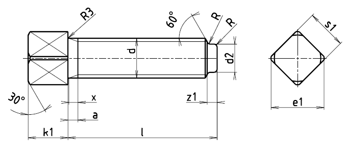

Příklad označení upínacího šroubu se závitem M12, délky l=50 mm, třídy pevnosti 5, z oceli 11 110, s čistým povrchem:
ŠROUB M12×50 ČSN 02 1121.11
| Závit d | amax. | b | d2h14 | e1 | k1 | R3 | R | s1 | x | z1+IT15 |
|---|---|---|---|---|---|---|---|---|---|---|
| M5 | 1,8 | 3,5 | 6,5 | 5 | 0,3 | 0,3 | 5 | 2,0 | 1,25 | |
| M6 | 2,6 | 18 | 4,0 | 8 | 6 | 0,4 | 0,3 | 6 | 2,5 | 1,5 |
| M8 | 3,0 | 22 | 5,5 | 10 | 8 | 0,4 | 0,5 | 8 | 3,2 | 2,0 |
| M10 | 4,0 | 26 | 7,0 | 13 | 10 | 0,5 | 0,5 | 10 | 3,8 | 2,5 |
| M12 | 4,0 | 30 | 8,5 | 16 | 12 | 0,6 | 1,0 | 12 | 4,3 | 3,0 |
| M16 | 4,5 | 38 | 12 | 22 | 16 | 0,8 | 1,2 | 17 | 5,0 | 4,0 |
| M20 | 6,0 | 46 | 15 | 28 | 20 | 1,0 | 1,2 | 22 | 6,3 | 5,0 |
| M24 | 7,0 | 18 | 32 | 22 | 1,0 | 1,6 | 24 | 7,5 | 6,0 |
| Délka l | Přibližná hmotnost [g] | ||||||||||||||||||
|---|---|---|---|---|---|---|---|---|---|---|---|---|---|---|---|---|---|---|---|
| Závit d | 10 | 15 | 20 | 25 | 30 | 35 | 40 | 45 | 50 | 55 | 60 | 70 | 80 | 90 | 100 | 110 | 120 | 140 | |
| M5 | 2,1 | 2,7 | 3,3 | 4,0 | 4,6 | 5,3 | 5,8 | ||||||||||||
| M6 | 3,3 | 4,1 | 5,0 | 5,9 | 6,8 | 7,7 | 8,6 | 9,4 | 10,3 | ||||||||||
| M8 | 6,8 | 8,4 | 9,8 | 11,5 | 13,2 | 14,7 | 16,4 | 17,9 | 19,5 | 21,1 | |||||||||
| M10 | 16,4 | 18,9 | 21,4 | 23,9 | 26,5 | 29,0 | 31,5 | 34,0 | 36,5 | ||||||||||
| M12 | 27,1 | 30,7 | 34,4 | 38,0 | 41,5 | 45,2 | 48,8 | 52,3 | 56,2 | 63,4 | 70,5 | 78,0 | |||||||
| M16 | 74,0 | 80,6 | 87,0 | 93,9 | 100 | 107 | 114 | 127 | 141 | 154 | 167 | 181 | 194 | ||||||
| M20 | 175 | 185 | 195 | 217 | 238 | 260 | 280 | 301 | 321 | 363 | |||||||||
| M24 | 258 | 272 | 302 | 332 | 362 | 392 | 410 | 452 | 542 | ||||||||||